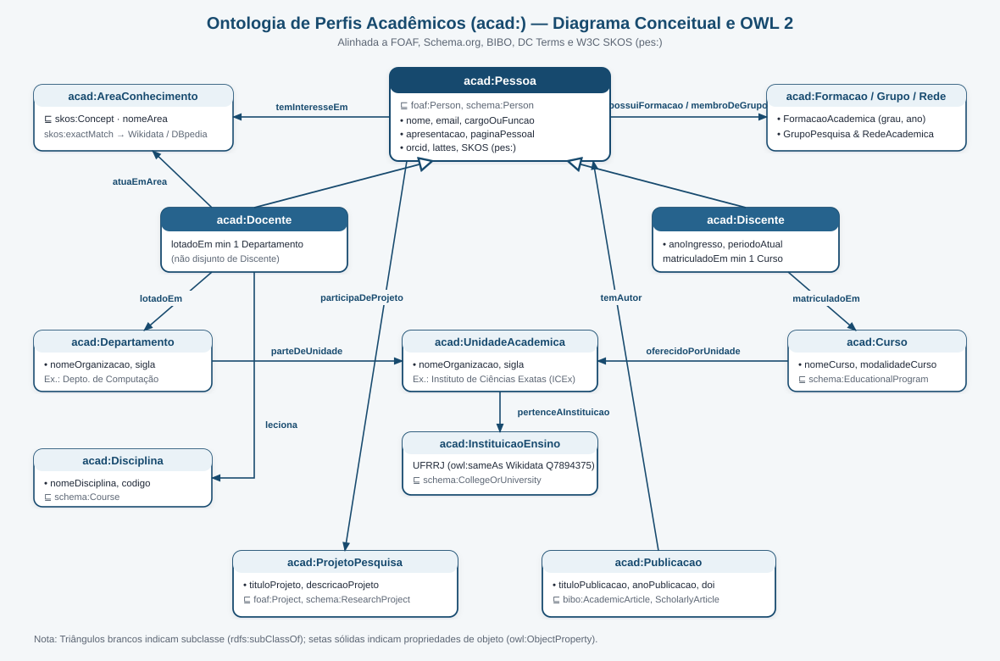

Documentação Técnica e Modelagem Semântica
Diagrama, Ontologia e Vocabulários
Esta página reúne de forma visual a arquitetura semântica do portal. Os arquivos originais em Markdown também estão disponíveis no repositório GitHub para consulta detalhada.
Proposta (descricao.md) ↗ Decisões e IA (decisoes-modelagem.md) ↗ Dicionário de Dados ↗ Vocabulários ↗ Ontologia (ontologia.md) ↗
1. Diagrama Conceitual e da Ontologia (acad:)
Triângulos vazados indicam herança (rdfs:subClassOf); setas sólidas indicam propriedades de objeto (owl:ObjectProperty).

2. Vocabulários Reutilizados e Taxonomia SKOS (pes:)
| Vocabulário | Prefixo | Uso e Alinhamento no Projeto |
|---|---|---|
| FOAF | foaf: | Base de agentes, organizações e projetos (acad:Pessoa ⊑ foaf:Person, acad:nome ⊑ foaf:name, foaf:mbox). |
| Schema.org | schema: | Interoperabilidade web e JSON-LD embutido nas páginas (Person, CollegeOrUniversity, ScholarlyArticle, knowsAbout). |
| W3C SKOS | skos: | Taxonomia facetada de pessoas (pes:Vinculo, pes:Atuacao, pes:Condicao) e ligação de áreas via skos:exactMatch / skos:closeMatch. |
| BIBO | bibo: | Alinhamento bibliográfico (acad:Publicacao ⊑ bibo:AcademicArticle, bibo:doi). |
| DC Terms | dcterms: | Metadados de proveniência, fonte, data de atualização e licença (CC BY 4.0). |
| VIVO (Referência) | vivo: | Referência conceitual analisada na pesquisa; optamos por ontologia de aplicação própria mais enxuta em vez de importar o núcleo BFO/IAO completo. |
3. Decisões Críticas de Modelagem e Política LOD
- Hash URIs no GitHub Pages: Como o GitHub Pages é estático (sem HTTP 303), usamos Hash URIs apontando para os documentos publicados (
.../ontologia/dados.ttl#Recurso) com<link rel="alternate" type="text/turtle">no HTML. - Política criteriosa para
owl:sameAs:owl:sameAsé usado exclusivamente para identidade estrita narecurso:UFRRJ(WikidataQ7894375e DBpedia). Áreas usamskos:exactMatch, cursos usamskos:closeMatche perfis demonstrativos usamrdfs:seeAlsopara ORCID/Lattes/OpenAlex. - Não-disjunção entre Docente e Discente:
acad:Docenteeacad:Discentenão foram declaradas disjuntas porque um docente pode estar matriculado em curso de pós-graduação. - Compatibilidade com Protégé / HermiT: Restrições de cardinalidade OWL utilizam
xsd:integer(em vez dexsd:gYear) para evitar erros no raciocinador HermiT. - Classes Definidas (Inferência OWL):
acad:PesquisadorEmProjetoeacad:AutorAcademicosão inferidas automaticamente viaowl:equivalentClass.
4. Dicionário Resumido de Classes e Principais Propriedades
| Classe / Propriedade | Domínio → Alcance / Restrição | Descrição |
|---|---|---|
acad:Docente | lotadoEm min 1 Departamento | Professor/pesquisador vinculado a departamento acadêmico. |
acad:Discente | matriculadoEm min 1 Curso | Estudante matriculado em graduação ou pós-graduação. |
acad:Publicacao | temAutor min 1 Pessoa; titulo e ano (1) | Artigo/produção acadêmica permitindo consulta de coautorias. |
acad:lotadoEm / acad:parteDeUnidade | Docente → Departamento → UnidadeAcademica | Hierarquia institucional docente até o ICEx. |
acad:matriculadoEm / acad:oferecidoPorUnidade | Discente → Curso → UnidadeAcademica | Hierarquia institucional discente até o ICEx. |
acad:participaDeProjeto | Pessoa → ProjetoPesquisa | Liga docentes e discentes a projetos de pesquisa em comum. |
acad:possuiClassificacaoSKOS | Pessoa → skos:Concept | Associa o perfil aos conceitos facetados de pes:. |